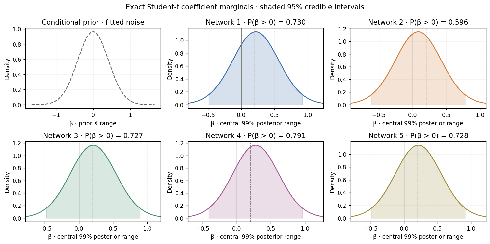
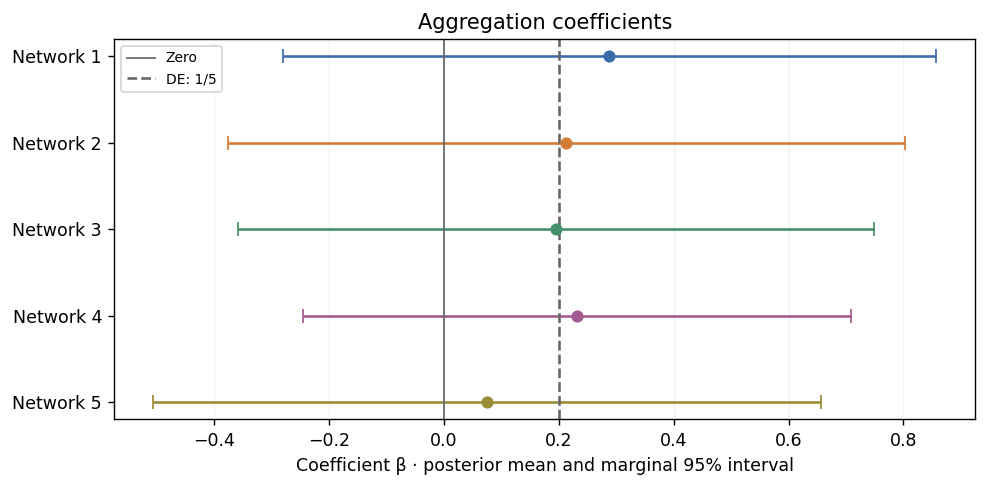
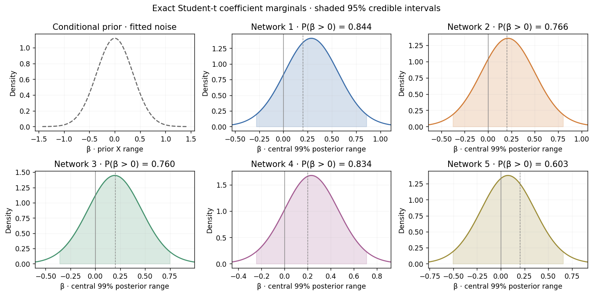
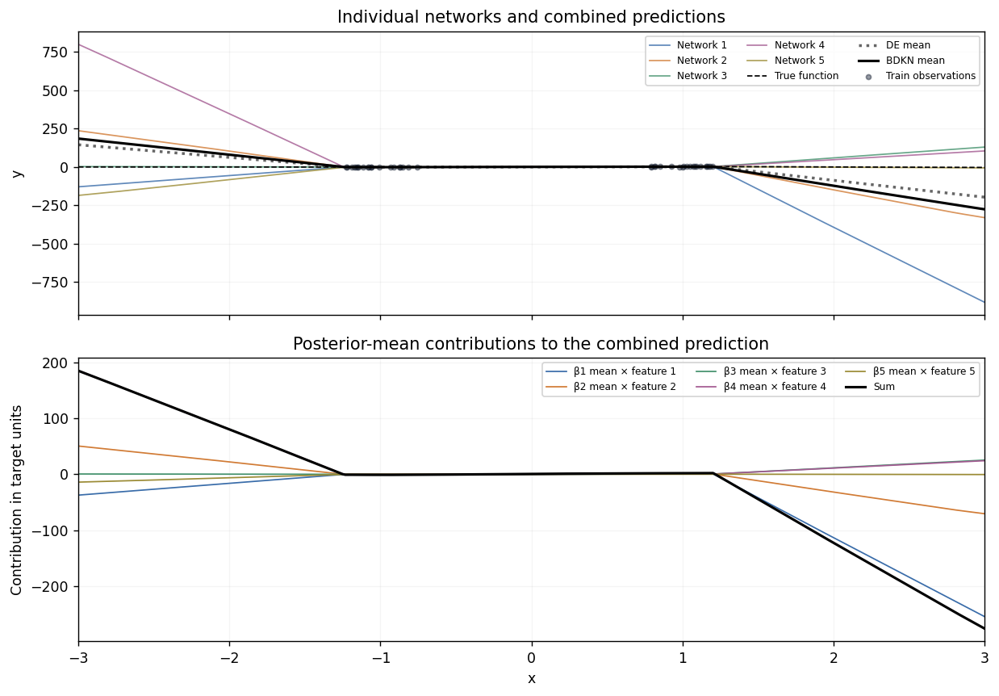
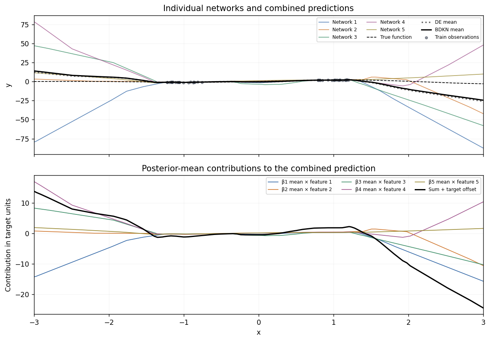
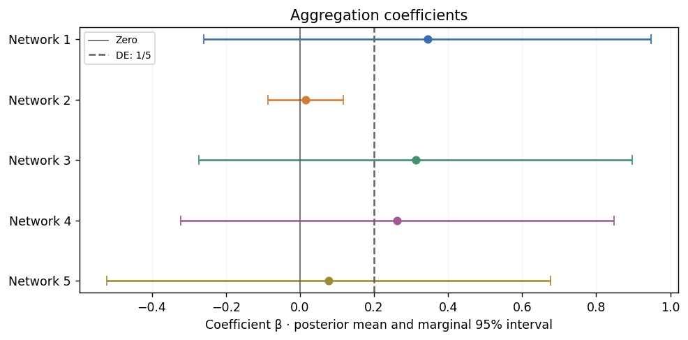
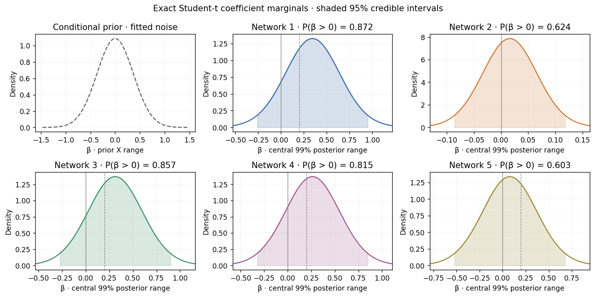
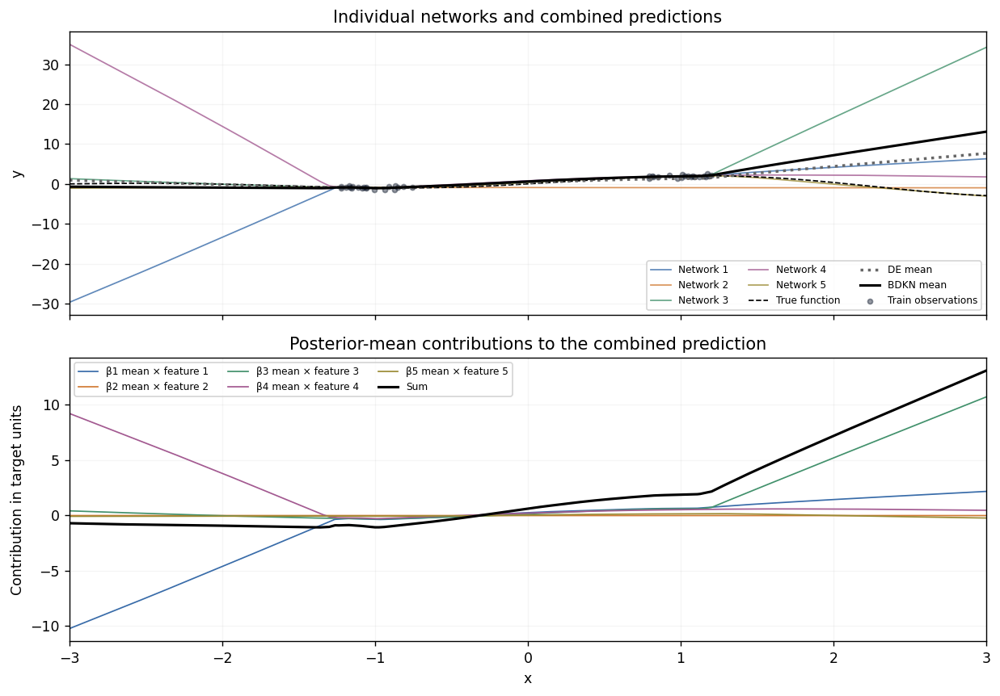

Regression comparison
Download resultsAggregation weights
Coefficients can be negative and need not sum to one. Intervals describe coefficient uncertainty; the dashed reference is DE’s fixed 1/H weight.
BDKN



Each density panel uses its own X range for readability; coefficient intervals above share a common axis. Prior reference conditions on fitted noise. Contribution shares use held-out inputs; test targets are used only for scoring.
| Network | β mean | 95% low | 95% high | P(β > 0) | Contribution share | Test RMSE | Test NLL |
|---|---|---|---|---|---|---|---|
| 1 | 0.21696 | -0.49120 | 0.92513 | 0.73035 | 0.17700 | 2.18420 | 209.95203 |
| 2 | 0.08393 | -0.61020 | 0.77806 | 0.59590 | 0.06140 | 2.03148 | 169.38755 |
| 3 | 0.20692 | -0.48031 | 0.89416 | 0.72686 | 0.23265 | 3.31554 | 985.68460 |
| 4 | 0.27844 | -0.40889 | 0.96578 | 0.79111 | 0.30558 | 3.01797 | 517.36540 |
| 5 | 0.21214 | -0.48923 | 0.91351 | 0.72777 | 0.22337 | 3.07438 | 730.92977 |
Functional repulsion · BDKN



Each density panel uses its own X range for readability; coefficient intervals above share a common axis. Prior reference conditions on fitted noise. Contribution shares use held-out inputs; test targets are used only for scoring.
| Network | β mean | 95% low | 95% high | P(β > 0) | Contribution share | Test RMSE | Test NLL |
|---|---|---|---|---|---|---|---|
| 1 | 0.28846 | -0.28012 | 0.85705 | 0.84432 | 0.46005 | 287.76440 | 3638849.83585 |
| 2 | 0.21349 | -0.37600 | 0.80298 | 0.76577 | 0.18408 | 129.02812 | 113038522.03277 |
| 3 | 0.19515 | -0.35837 | 0.74867 | 0.75987 | 0.04309 | 43.13737 | 431477681.44100 |
| 4 | 0.23174 | -0.24481 | 0.70828 | 0.83420 | 0.29245 | 242.18453 | 4295706.81505 |
| 5 | 0.07572 | -0.50501 | 0.65645 | 0.60325 | 0.02033 | 56.32127 | 494.48032 |
Weight repulsion · BDKN



Each density panel uses its own X range for readability; coefficient intervals above share a common axis. Prior reference conditions on fitted noise. Contribution shares use held-out inputs; test targets are used only for scoring.
| Network | β mean | 95% low | 95% high | P(β > 0) | Contribution share | Test RMSE | Test NLL |
|---|---|---|---|---|---|---|---|
| 1 | 0.18020 | -0.40553 | 0.76594 | 0.73119 | 0.34989 | 34.16556 | 17.00797 |
| 2 | 0.25123 | -0.35887 | 0.86133 | 0.79490 | 0.10059 | 8.96824 | 18203609.79651 |
| 3 | 0.17790 | -0.45012 | 0.80592 | 0.71491 | 0.25572 | 23.43813 | 58446954.17412 |
| 4 | 0.21792 | -0.37955 | 0.81540 | 0.76734 | 0.24043 | 22.86353 | 10.15719 |
| 5 | 0.17001 | -0.47047 | 0.81049 | 0.70270 | 0.05337 | 5.06288 | 4647903.73387 |
First-order repulsion · BDKN



Each density panel uses its own X range for readability; coefficient intervals above share a common axis. Prior reference conditions on fitted noise. Contribution shares use held-out inputs; test targets are used only for scoring.
| Network | β mean | 95% low | 95% high | P(β > 0) | Contribution share | Test RMSE | Test NLL |
|---|---|---|---|---|---|---|---|
| 1 | 0.34447 | -0.25987 | 0.94881 | 0.87192 | 0.36319 | 9.52404 | 354629.07542 |
| 2 | 0.01605 | -0.08573 | 0.11784 | 0.62420 | 0.00263 | 1.54513 | 17.44267 |
| 3 | 0.31284 | -0.27207 | 0.89775 | 0.85691 | 0.35691 | 12.05833 | 543.38464 |
| 4 | 0.26303 | -0.32261 | 0.84868 | 0.81527 | 0.26257 | 10.42701 | 997824.05199 |
| 5 | 0.07770 | -0.52110 | 0.67650 | 0.60277 | 0.01471 | 0.55140 | 19.62587 |